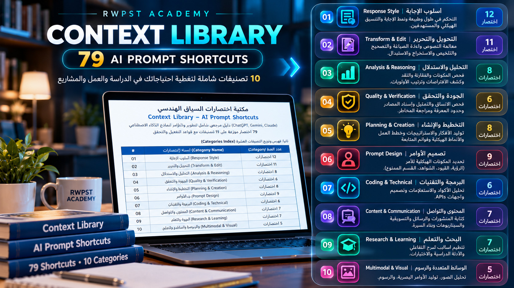
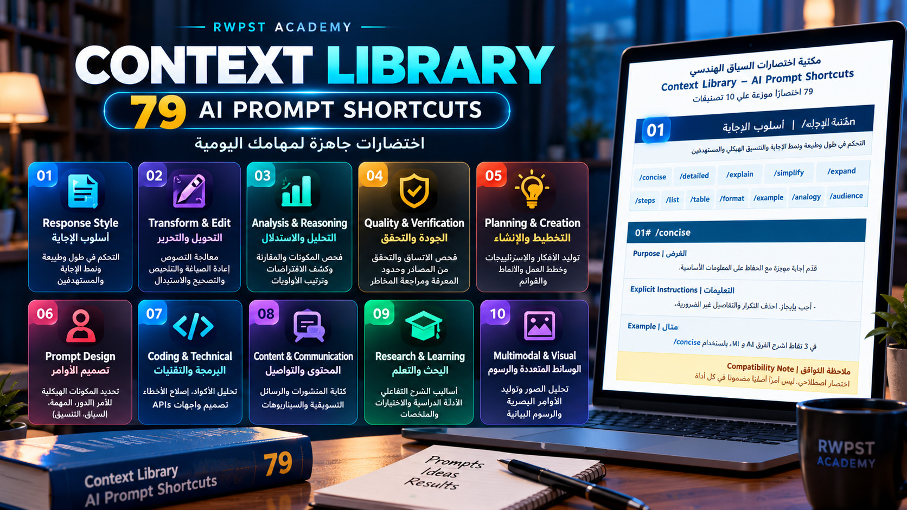
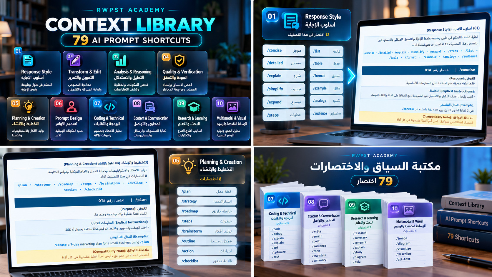
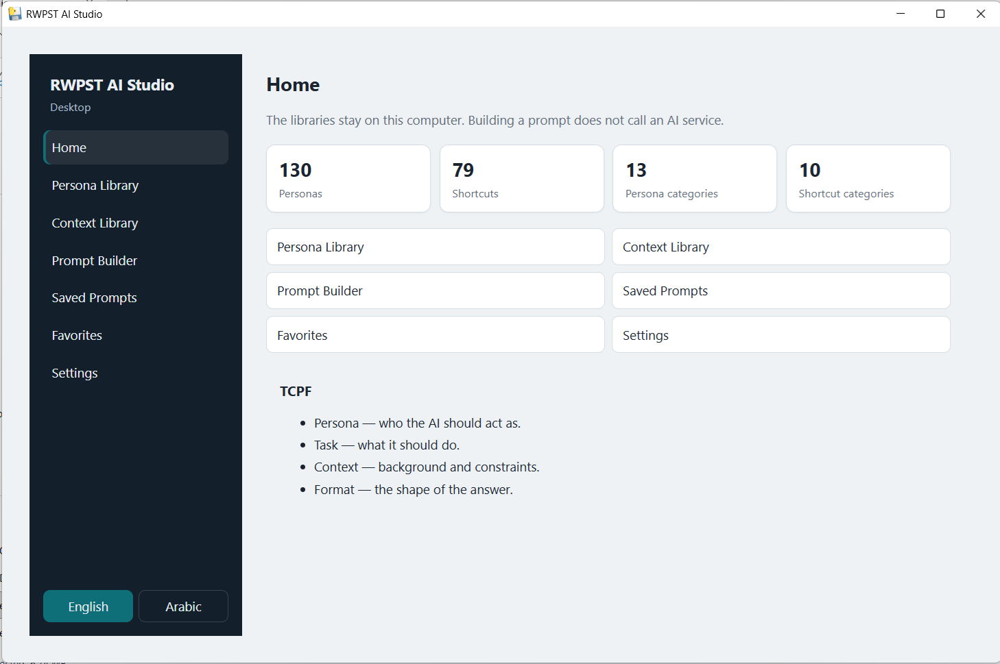

01
محتوى تعليمي متكامل
- وحدات تعليمية مرتبة.
- فيديوهات الكورس الحالية.
- تدرج من الأساسيات إلى التطبيقات المتقدمة.
RWPST AI Academy
Prompting Like a Pro
اتعلم تبني برومبت أوضح، وتضيف السياق المناسب، وتراجع مخرجات الذكاء الاصطناعي، وتحسن النتائج بشكل منظم.
الكورس مش مجرد مقدمة في Prompt Engineering. ده مسار عملي يجمع بين التعلم، ودراسات الحالة، والتطبيقات، والأدوات المساعدة.
السعر المعتاد 999 ج.م
799 ج.م سعر الإطلاق
توفّر 200 ج.م
لم يُحدد موعد لانتهاء سعر الإطلاق.
التسجيل عبر واتساب. رابط واتساب غير مفعّل على هذه الصفحة إلى أن يُضاف رقم واتساب الأعمال.
فيديو تعريفي بالكورس. الصوت لا يبدأ إلا عندما تضغط تشغيل.
منظومة تعليمية تجمع بين المعرفة والأدوات والتطبيق.
01
02
03
04
الفرق ليس في طول الجملة. الفرق في وضوح المهمة، والمعلومات التي تساعد النموذج على فهم المطلوب، والحدود التي تمنع الإجابة من الانحراف.
تعليمات عامة
اكتب لي مقالًا عن الذكاء الاصطناعي.
النتيجة قد تكون عامة أو ناقصة، لأن الجمهور والطول والهدف والمراجع غير محددة.
مهمة + سياق + قيود + مراجع
اكتب مقالًا قصيرًا عن فوائد الذكاء الاصطناعي لفريق مبيعات مبتدئ. استخدم لغة مباشرة، ولا تتجاوز 250 كلمة، واعتمد على النقاط المرفقة. إذا لم تغطِّ المراجع معلومة، فاذكر ذلك بدل اختراعها.
النتيجة تكون أقرب إلى المطلوب، ويمكن مراجعتها ثم تعديل البرومبت إذا ظهر نقص.
هذا مثال توضيحي للفكرة، وليس اقتباسًا حرفيًا من الدروس. البرومبت الأفضل يرفع جودة التعليمات ويساعد على التحسين بالتكرار. هو لا يضمن مخرجًا مثاليًا، والمراجعة البشرية تبقى جزءًا من العمل.
الكورس مقسّم إلى 4 وحدات. عناوين الدروس التالية مأخوذة من ملفات الفيديو الحالية، ومعها وصف قصير بالعربية ليسهل تصفحها.

Unit 01
From Basic to Professional Prompts
من الطلب العام إلى برومبت أوضح: بناء التعليمات على خطوات، والاستعانة بالذكاء الاصطناعي في الصياغة، مع مثال عملي.

Unit 02
From Basic Prompts to Better AI Results
تحسين البرومبت بعد رؤية النتيجة: التكرار، والسياق، والقيود، مع تطبيق عملي. مواد الوحدة تشمل دليل مكتبة Persona.

Unit 03
تحسين جودة مخرجات الذكاء الاصطناعي
التعامل مع المخرج كمسودة تُراجع: فهم الهلوسة، وتقسيم المهمة عبر Prompt Chaining، ثم استخدام القيود والسياق لتقليل الإجابات غير المدعومة.

Unit 04
Visual, Multimodal & Responsible AI
الانتقال من النص إلى الصور والمدخلات المتعددة، ثم مراجعة الناتج مع الانتباه إلى الخصوصية والتحقق والحكم البشري.
What You Get Inside the Course
هذه الموارد موجودة في ملفات الكورس أو مذكورة في صفحة المنتج الحالية. تسليمها مع طلب الشراء لم يُختبر من هذه الصفحة.



مكتبة شخصيات لتحديد الدور والأسلوب عند كتابة البرومبت، ومعها دليل عرض خاص بالمكتبة داخل مواد الوحدة الثانية.
النسخة الحالية تتضمن 79 AI Prompt Shortcuts في 10 تصنيفات. الاختصارات جزء من مكتبة السياق.
عروض Blueprint للوحدات، ودليل مكتبة Persona، ومراجع محتوى مرافقة للتطبيق والمراجعة.
حزمة موارد المستوى الأول تشمل كراسة تمارين، معرضًا لتحسين البرومبت، قالب برومبت، خريطة تعلم، ومشروعًا ختاميًا.
صفحة المنتج تذكر تطبيقًا عمليًا باستخدام RWPST AI Studio. الأداة الموجودة اليوم تطبيق سطح مكتب لويندوز لاستعراض المكتبات وبناء البرومبت. طريقة تسليمها بعد الدفع تحتاج تأكيدًا.

الدفع مرة واحدة. بعده يبقى وصولك إلى ما اشتريته متاحًا، من غير اشتراك شهري.
تحصل عند الاشتراك على النسخة الحالية من RWPST Context Library.
أما الإصدارات الرئيسية الجديدة، ومجموعات الاختصارات الإضافية، والتوسعات المدفوعة المستقبلية، فقد تُتاح بشكل مستقل مقابل رسوم إضافية.
ويظل وصولك إلى النسخة التي حصلت عليها عند الشراء محفوظًا.
مناسب لمن يريد بداية مرتبة في Prompt Engineering، ولمن جرّب أدوات الذكاء الاصطناعي ويريد تعليمات أدق. المسار يبدأ من الأساسيات ويتدرج إلى الاستخدامات المتقدمة.
لمن يريد فهم كتابة البرومبت بطريقة مرتبة، بدل التجربة العشوائية مع أدوات الذكاء الاصطناعي.
لمن يكتب أو يلخّص أو يحلّل أو يجهّز نصًا وصورة، ويحتاج أن يشرح المهمة والسياق والقيود بوضوح.
لمن يريد أن يفحص الناتج، ويعدّل البرومبت، ويحتفظ بمراجع يعيد استخدامها لاحقًا.
المسار العملي في الكورس يربط الشرح بالمثال، ثم بالتطبيق والمراجعة، مع أدلة ومراجع تبقى معك بعد الدرس.
تبدأ كل وحدة بمفهوم واضح، مثل بناء البرومبت أو السياق أو مراجعة المخرج.
الدروس تعرض كيف تتحول التعليمات العامة إلى طلب أوضح، ثم كيف تُراجع النتيجة.
كراسة التمارين والمشروع الختامي موجودان في حزمة الموارد لتطبيق ما شاهدته.
التكرار جزء من الكورس: ترى الفجوة، وتعدّل البرومبت، ثم تعيد النظر في الناتج.
مكتبات Persona و Context، وقوالب البرومبت، وأدلة الوحدات تبقى مراجع للرجوع إليها.
Prompt Engineering هو المسار المتاح الآن، ويبدأ بكورس Prompting Like a Pro. المساران التاليان اتجاهان تعليميان لاحقان، وليسا متاحين للشراء.
متاح الآن
نقطة البداية الحالية: كيف تكتب البرومبت، وتضيف السياق، وتراجع مخرجات الذكاء الاصطناعي وتحسّنها.
اشترك في Prompting Like a Proقيد التطوير
اتجاه تعليمي مخطط حول الاستخدام الأوسع للذكاء الاصطناعي التوليدي. لا يوجد موعد إصدار، وهو غير متاح للشراء.
قيد التطوير
اتجاه تعليمي مخطط حول وكلاء الذكاء الاصطناعي. لا يوجد موعد إصدار، وهو غير متاح للشراء.
دفعة واحدة مقابل الكورس والموارد المشمولة في هذه النسخة. التسجيل وإتمام الدفع يتمّان عبر واتساب.
السعر المعتاد 999 ج.م
799 ج.م سعر الإطلاق
توفّر 200 ج.م
لم يُحدد موعد لانتهاء سعر الإطلاق.
لمن يريد مقدمة منظمة في Prompt Engineering، ولمن يستخدم أدوات الذكاء الاصطناعي ويريد طريقة أوضح لكتابة البرومبت ومراجعة الناتج. المسار يبدأ من الأساسيات ويتدرج بعد ذلك.
أربع وحدات: بناء البرومبت من الصيغة العامة إلى صيغة أوضح، تحسين البرومبت عبر السياق والقيود والتكرار، رفع قابلية مراجعة المخرجات، ثم البرومبت البصري ومتعدد الوسائط مع التحقق والخصوصية والحكم البشري. تفاصيل الدروس في قسم المحتوى.
مكتبة Persona، ومكتبة Context وفيها اختصارات البرومبت، وأدلة وعروض للوحدات، وكراسة تمارين، وقالب برومبت، ومعرض تحسين، وخريطة تعلم، ومشروع ختامي. صفحة المنتج تذكر أيضًا التطبيق العملي باستخدام RWPST AI Studio.
من زر «اشترك في الكورس». يفتح واتساب برسالة جاهزة لإتمام التسجيل ومعرفة خطوات الدفع. هذه الصفحة لا تجمع بيانات البطاقة ولا تنفّذ عملية دفع.
بعد إتمام التسجيل تحصل على وصول مدى الحياة إلى الكورس والموارد المشمولة في نسختك. خطوات استلام المواد تُوضَّح أثناء التواصل عبر واتساب.
مدة الوصول إلى المحتوى المشترى مدى الحياة. الشهادة وسياسة الاسترداد غير مذكورتين هنا، وتحتاجان تأكيدًا من الأكاديمية.
لا. تدفع مرة واحدة وتحصل على وصول مدى الحياة إلى محتوى الكورس والموارد المشمولة في نسختك.
نعم. تحصل على النسخة الحالية التي تتضمن 79 AI Prompt Shortcuts موزعة على 10 Categories.
التحديثات التصحيحية والصيانة مشمولة. أما الإصدارات الرئيسية الجديدة والتوسعات المدفوعة لمكتبة Context Library فقد تُتاح بشكل مستقل.
يبدأ الكورس من أساسيات Prompt Engineering ويتدرج إلى الاستخدامات والتطبيقات المتقدمة.
يمكنك التواصل مع فريق RWPST AI Academy عبر واتساب لإتمام التسجيل ومعرفة خطوات الدفع.
إذا كنت تريد أن تنتقل من الطلبات العشوائية إلى تعليمات أوضح، ومراجعة أفضل للناتج، فهذا الكورس هو نقطة البداية المتاحة الآن في الأكاديمية.
السعر المعتاد 999 ج.م
799 ج.م سعر الإطلاق
توفّر 200 ج.م
التسجيل والدفع يتمّان عبر واتساب. هذه الصفحة لا تعالج الدفع.
رابط واتساب غير مفعّل على هذه الصفحة إلى أن يُضاف رقم واتساب الأعمال.